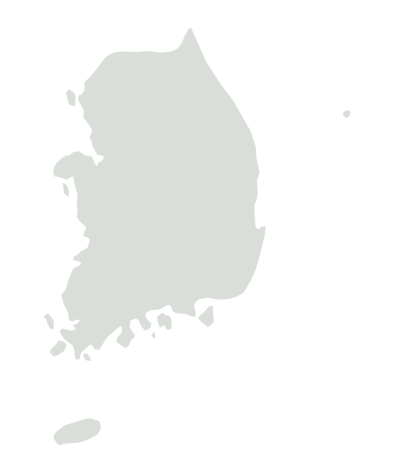

가능성을 담다,공간을 바꾸다.
몇 번만 기입하면
바꿀 수 있는 공간
의뢰인님의 공간과 예산을 먼저 듣고,
필요한 변화에 맞는 견적을 제안해드려요.
NEMO INTERIOR당신의 일상에 새로운 가능성
공간의 쓰임부터,
당신에게 맞게.
취향과 생활을 담는 집
LIFE IN A NEW SPACE공간에 담고 싶은,
공간에 담고 싶은,
우리의 이야기.

“집에 돌아오는 시간이 기다려지는 공간을 원해요.”주거 공간
“말로 설명하기 어려운 취향도 공간에 담고 싶어요.”주거 공간
“작은 매장에도 우리 브랜드의 분위기를 담고 싶어요.”상업 공간
“편한 동선으로 매일의 생활이 달라졌으면 해요.”주거 공간
“손님이 편하게 머물다 가는 공간을 만들고 싶어요.”상업 공간
FROM YOUR IDEA TO YOUR SPACE
처음의 생각을, 매일의 공간으로.
상담부터 완성까지, 네모와 함께하는 과정
01
01 / CONSULTATION공간을 듣고,
상담 신청 후 견적서 발송
공간을 듣고,
알맞은 견적을 찾아요.
공간의 용도와 원하는 변화, 예산을 알려주세요.
필요한 공사의 범위를 함께 정리해요.
02
02 / MEASUREMENT공간을 살피고,
방문을 통한 실제 치수 측정
공간을 살피고,
정확하게 측정해요.
실제 공간의 크기와 구조를 살펴보고,
도면에 담기지 않는 현장의 조건까지 확인해요.
03
03 / DESIGN취향과 쓰임이
설계 및 디자인
취향과 쓰임이
만나는 공간을 그려요.
동선부터 소재, 색감까지.
당신의 생활과 브랜드에 맞는 방향을 함께 정해요.
04
04 / BUILD & COMPLETE생각했던 가능성이,
공사와 완성
생각했던 가능성이,
매일의 공간이 돼요.
설계한 방향을 바탕으로 공사를 진행하고,
마지막 디테일까지 함께 확인해요.